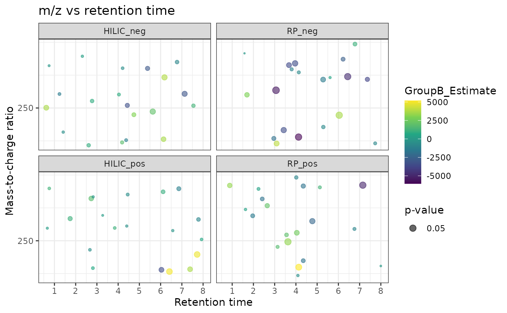

Plots a scatter plot of results of statistical tests, where each point represents a feature. The plot has retention time on x-axis, m/z on y-axis and the size of the points is scaled based on p-value
Usage
mz_rt_plot(
object,
p_col = NULL,
p_limit = NULL,
mz_col = NULL,
rt_col = NULL,
color = NULL,
title = "m/z retention time",
subtitle = NULL,
color_scale = getOption("notame.color_scale_con"),
...
)
# S4 method for class 'MetaboSet'
mz_rt_plot(
object,
p_col = NULL,
p_limit = NULL,
mz_col = NULL,
rt_col = NULL,
color = NULL,
title = "m/z vs retention time",
subtitle = NULL,
color_scale = getOption("notame.color_scale_con"),
all_features = FALSE
)
# S4 method for class 'data.frame'
mz_rt_plot(
object,
p_col = NULL,
p_limit = NULL,
mz_col = NULL,
rt_col = NULL,
color = NULL,
title = "m/z vs retention time",
subtitle = NULL,
color_scale = getOption("notame.color_scale_con")
)
# S4 method for class 'SummarizedExperiment'
mz_rt_plot(
object,
p_col = NULL,
p_limit = NULL,
mz_col = NULL,
rt_col = NULL,
color = NULL,
title = "m/z vs retention time",
subtitle = NULL,
color_scale = getOption("notame.color_scale_con"),
all_features = FALSE
)Arguments
- object
a
SummarizedExperiment,MetaboSetobject or a data frame. Feature data is used. If x is a data frame, it is used as is.- p_col
the column name containing p-values. This is used to scale the size of the points.
- p_limit
numeric, limits plotted features by p-values. If NULL, plots all features.
- mz_col, rt_col
the column names for m/z and retention time. If NULL, automatic detection is attempted.
- color
the column name used to color the points
- title
The plot title
- subtitle
The plot subtitle
- color_scale
color scale as returned by a ggplot function. Defaults to current continuous color scale.
- ...
parameters passed to
geom_point, such as shape and alpha values. New aesthetics can also be passed usingmapping = aes(...).- all_features
logical, should all features be retained? Should be used only if x is a SummarizedExperiment object.
Examples
data(example_set)
# Compute results from a linear model
lm_results <- perform_lm(example_set, formula_char = "Feature ~ Group")
#> INFO [2025-06-23 22:36:59] Starting linear regression.
#> INFO [2025-06-23 22:37:00] Linear regression performed.
with_results <- join_rowData(example_set, lm_results)
# Plot from the SummarizedExperiment object
# automatically facet by analytical mode in variable Split
mz_rt_plot(with_results, p_col = "GroupB_P", color = "GroupB_Estimate")
#> INFO [2025-06-23 22:37:00] Identified m/z column Average_Mz and retention time column Average_Rt_min
#> Multiple splits detected, plotting them to separate panes.

# Plot the results from the results dataframe
lm_data <- dplyr::left_join(as.data.frame(rowData(example_set)), lm_results)
#> Joining with `by = join_by(Feature_ID)`
mz_rt_plot(lm_data, p_col = "GroupB_P", color = "GroupB_Estimate")
#> INFO [2025-06-23 22:37:00] Identified m/z column Average_Mz and retention time column Average_Rt_min
#> Multiple splits detected, plotting them to separate panes.